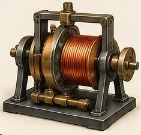

Jedlik Ányos bencés szerzetes, tanár és fizikus volt. Az 1850-es évek végén felfedezte a dinamó elvét, vagyis hogy az áramfejlesztő gépben az elektromágnes maga is képes gerjeszteni az áramot. Ezt a külső mágnes nélküli megoldást néhány évvel később mások is megépítették.
Már az 1820-as években megalkotta az egyik első elektromos forgómotort. Nevéhez fűződik a szódavíz előállításának kidolgozása is.
← Vissza a főoldalra